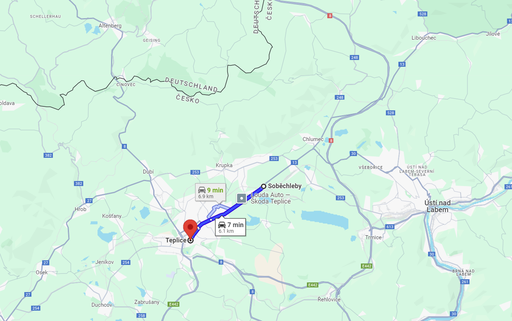
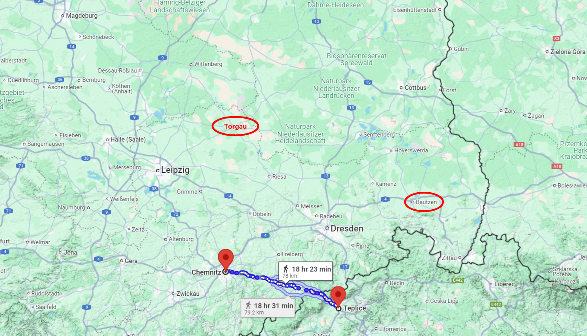
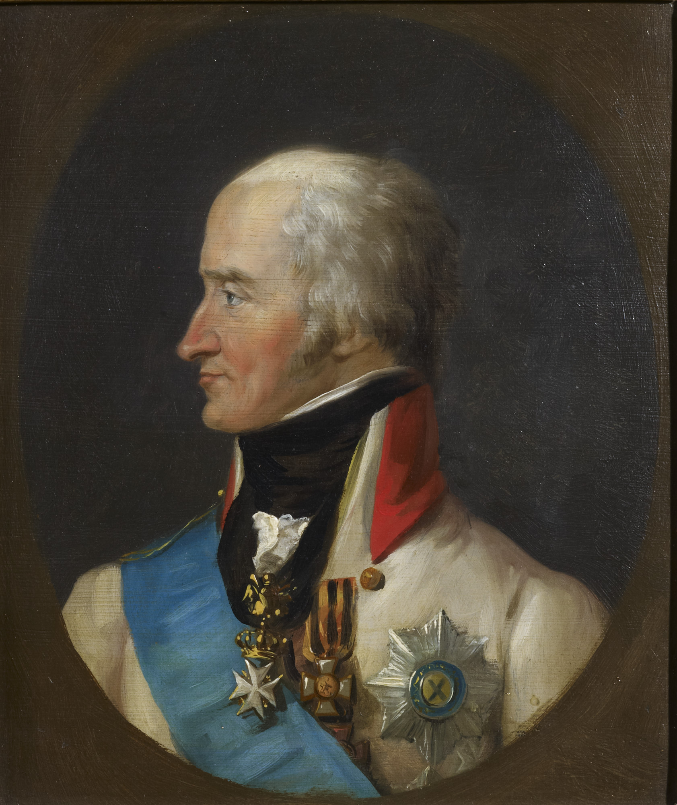
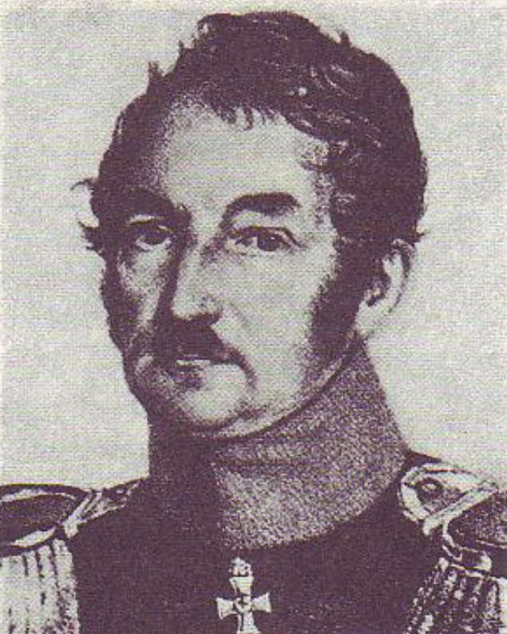
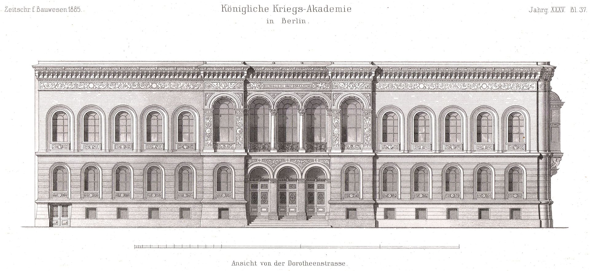

라이프치히로 가는 길 (1) - 명령 불복종
게시: 2024-10-28T06:30:13+09:00
여태까지 왜 바이에른이 10월 8일 오스트리아와 리드(Ried) 조약을 맺고 나폴레옹을 배신하게 되는지 그 과정을 보셨습니다. 이제 다시 시선을 나폴레옹과 슈바르첸베르크, 블뤼허와 베르나도트에게 돌려보시겠습니다. 9월 6일 덴너비츠(Dennewitz) 전투에서 베르나도트가 네를 완패시킨 뒤, 과연 이들은 무엇을 하고 있었을까요? 먼저 나폴레옹은 8월 29~30일의 쿨름 전투 이후에도 보헤미아로 쳐들어가 슈바르첸베르크의 보헤미아 방면군과 결전을 벌이려고 시도는 해보았습니다. 그는 생시르의 제14군단을 선두로 빅토르의 제2군단과 근위대, 그리고 와해된 방담의 제1군단 잔존 병력까지 보헤미아로 넘어가는 얼츠거비어거(Erzgebirge) 산맥 일대에 투입했습니다. 실제로 생시르의 제14군단의 선두는 9월 10일 저녁에 소보클레벤(Sobochleben, 체코어로는 Soběchleby) 코 앞까지 도착했는데, 여기는 보헤미아 방면군 사령부가 위치한 테플리츠(Teplitz)와 불과 7km 정도 떨어진 곳으로서 1~2시간만 더 행군하면 당도할 수 있는 거리였습니다. 뿐만 아니라 나폴레옹도 직접 이들과 함께 보헤미아로 진입하는 산맥까지 들어왔습니다.

(당시 테플리츠에는 슈바르첸베르크는 물론 알렉산드르와 프리드리히 빌헬름 등 연합군 수뇌부가 다 모여있었는데, 거기 코 앞까지 프랑스군이 왔다는 것은 진짜 심각한 문제였습니다.) 쿨름 전투에서 대승을 거두고 방담까지 생포한 보헤미아 방면군은 잠깐 사기가 치솟기는 했지만, 실은 쿨름 전투에서도 매우 아슬아슬하게 이긴 정도로서, 슈바르첸베르크와 알렉산드르를 비롯한 연합군 수뇌부들은 실은 겁에 질려 있었습니다. 그렇게 가슴을 쓸어내리고 있는데 이번에는 진짜 나폴레옹이 본진을 몰고 쳐들어온다는 소식이 날아들자 이들은 다시 호떡집에 불난 듯 어수선해질 수 밖에 없습니다. 슈바르첸베르크는 물론 알렉산드르도 블뤼허에게 다시 편지를 보내 '나폴레옹이 이쪽으로 쳐들어온다'라며 블뤼허의 슐레지엔 방면군 약 7만 중 5만을 보헤미아로 보낼 것을 요구했습니다. 그러나 뜻밖에도, 나폴레옹은 이렇게 연합군의 코 앞까지 왔다가 공격하지 않고 슬그머니 물러났습니다. 역시 덴너비츠 전투에서의 패배가 큰 타격이었습니다. 게다가 막도날의 보버(Bober) 방면군이 카츠바흐(Katsbach) 전투에서 패배한 이후 좀처럼 전선을 수습하지 못하고 계속 후퇴만 거듭하는 것도 큰 문제였습니다. 나폴레옹이 험한 얼츠거비어거 산맥을 넘어 만만찮은 규모인 보헤미아 방면군을 공격하려면 뒤통수가 안전해야 했는데, 불시에 베르나도트나 블뤼허가 드레스덴을 들이치면 정말 낭패인 상황에 빠질 수 밖에 없었습니다. 결국 나폴레옹은 일부 병력만 남겨두어 보헤미아 방면군과 대치하게 한 뒤, 9월 12일 주력 부대들을 드레스덴 및 피르나 일대로 후퇴시켰습니다. 이렇게 나폴레옹이 물러나자, 슈바르첸베르크와 알렉산드르의 죽어가던 용기는 순식간에 부활했습니다. 이들은 덴너비츠 전투에서 패배한 나폴레옹이 후방 교통로가 끊길 것을 염려하여 라이프치히(Leipzig)로 후퇴하려한다고 생각했습니다. 사실 나폴레옹이 물러난 이유는 북쪽과 동쪽에 베르나도트와 블뤼허가 있기 때문이었지만, 아무튼 용기백배한 슈바르첸베르크는 블뤼허에게 편지를 보내 아예 전군을 이끌고 보헤미아로 와서 자신과 합류할 것을 요구했습니다. 슈바르첸베르크도 아무 생각 없이 그런 요구를 한 것은 아니었습니다. 나폴레옹이 후퇴하고 있으니, 보헤미아 방면군 전체를 이끌고 드레스덴의 서쪽인 켐니츠(Chemnitz)로 진격하면 나폴레옹은 프랑스와의 교통로가 위협 받는 것을 두려워하여 드레스덴에서 완전히 물러나 라이프니츠로 물러설 것이라는 판단을 했던 것입니다. 그렇게 되면 프랑스군 전체가 엘베강 전선에서 물러나게 되니까 베르나도트도 손쉽게 엘베강을 건너게 된다는 것은 덤이었습니다.

(슈배르첸베르크가 생각한 켐니츠 진격 계획입니다. 이렇게 지도상으로보면 꽤 말이 되는 작전입니다. 모스크바에서도 그랬지만, 나폴레옹은 원래 파리와 자신 사이의 위치에 적군이 끼어드는 것을 극도로 싫어했습니다. 나폴레옹이 정통성 없는 불안한 독재자였기 때문에 가지게 된 습성이지요. 드레스덴 동쪽의 붉은 원은 당시 막도날의 보버 방면군이 있던 바우첸이고, 라이프치히 북동쪽의 붉은 원은 덴너비츠에서 패배하고 물러난 네의 베를린 방면군 잔존 세력이 있던 토르가우 요새입니다.)
다만, 그렇게 하면 본진인 보헤미아가 텅 비게 되니, 급히 블뤼허의 슐레지엔 방면군이 보헤미아로 와서 수비군 역할을 해줘야 했습니다. 잠깐, 그렇게 하면 이번엔 또 슐레지엔이 텅 비게 되지 않나요? 슈바르첸베르크에겐 다 계획이 있었습니다. 블뤼허의 빈자리는 베니히센(Levin August von Bennigsen)에게 채우게 할 생각이었습니다. 러시아는 나폴레옹의 압제로부터 폴란드를 해방(?)시킨 뒤, 러시아 본토로부터 불러들인 보충병들과 현지에서 징집한 폴란드인들을 편성하여 약 4만 규모의 폴란드 방면군을 편성해놓은 상태였습니다. 이들은 9월 중순까지는 슐레지엔의 수도 브레슬라우에 도착할 예정이었으므로 슈바르첸베르크의 이런 계획은 전혀 터무니 없는 것은 아니었습니다.

(오랜만에 보는 베니히센 장군의 초상화입니다. 이 초상화는 나폴레옹 전쟁이 끝난 뒤 그려진 것으로서, 퐁텐블로에서 나폴레옹이 퇴위한 뒤 받은 러시아 최고 훈장인 '성 게오르그' 훈장을 달고 있습니다. 베니히센은 라이프치히 전투에도 참전하여 맹활약했고, 그 전투가 끝나던 날 밤에 알렉산드르로부터 공작에 봉해졌습니다.) 그러나 놀랍게도 연합군의 명목상 총사령관인 슈바르첸베르크의 이 명령을 블뤼허는 단칼에 거절했습니다. 그 뿐만 아니라 연이어 날아든 실질적인 총사령관 알렉산드르의 동일한 소환 명령 역시 블뤼허는 거부했습니다. 대신 블뤼허는 슈바르첸베르크와 알렉산드르에게 장황한 에세이를 써보냈는데, 요약하면 자신의 슐레지엔 방면군은 남서쪽의 보헤미아가 아니라 정반대로 북서쪽으로 이동하여 베르나도트의 북부 방면군과 협동 작전을 펼치는 것이 더 낫다는 주장이었습니다. 물론 '내게 이래라 저래라 하지 말라'는 식의 편지는 아니었고, 무척 예의를 갖추어 '차라리 이러는 것이 어떨까요?'라는 식의 제안의 형태를 갖춘 편지였으나, 지휘 체계로부터 내려온 명령에 대한 거부라는 점은 마찬가지였습니다. 처음부터 프로이센군과는 사이가 좋지 않았던 슈바르첸베르크와 오스트리아 군부는 이런 거절에 매우 기분이 상했고, 심지어 무척 온화한 성격이었던 알렉산드르조차 겉으로는 표내지 않았지만 상당히 불쾌하게 여겼습니다. 그런데 이어서 다시 보내온 블뤼허의 편지, 아니 실은 그 편지를 들고 온 륄(August Otto Rühle von Lilienstern) 소령이 알렉산드르를 직접 만나 말로 블뤼허의 이런 명령 거부 이유를 설명하자, 알렉산드르도 충분히 납득하고 고개를 끄덕였습니다. 덕분에 알렉산드르의 곁에서 그의 눈치를 보며 블뤼허의 일탈 행위에 대해 전전긍긍하던 프리드리히 빌헬름도 안심할 수 있었습니다. 대체 륄 소령은 무슨 이야기를 했던 것일까요?

(륄 소령은 당시 33세의 한창 나이였는데, 클라우제비츠와 동갑일 뿐만 아니라 함께 샤른호스트 밑에서 군사학을 배운 동급생이었습니다. 훗날 클라우제비츠와 그는 샤른호스트가 창건하고 자신들이 배웠던 프로이센 참모 대학(Preußische Kriegsakademi, 나중 명칭은 이렇게 프로이센 군사대학으로 개명)를 만들고 거기서 교수로서 프로이센의 참모진들을 양성했습니다. 륄 소령은 클라우제비츠에 비하면 명성이 한참 모자라지만 클라우제비츠와 많은 것을 함께 했고, 또 '평화시 및 전시의 장교 교육을 위한 매뉴얼'(Handbuch für den Offizier zur Belehrung im Frieden und zum Gebrauch im Felde)이라는 장황한 이름의 병법서도 출간했습니다.)

(샤른호스트와 클라우제비츠, 륄의 손때가 묻은 프로이센 참모 대학 건물입니다. 베를린에 위치한 이 건물은 나폴레옹 당시의 유명 건축가 슁켈(Karl Friedrich Schinkel)이 만든 것입니다. 아마 WW2 때 완전히 파괴되었는지, 지금은 완전히 다른 건물들이 들어서 있네요.) Source : The Life of Napoleon Bonaparte, by William Milligan Sloane Napoleon and the Struggle for Germany, by Leggiere, Michael V With Napoleon's Guns by Colonel Jean-Nicolas-Auguste Noël https://en.wikipedia.org/wiki/Levin_August_von_Bennigsen https://en.wikipedia.org/wiki/August_Otto_R%C3%BChle_von_Lilienstern https://en.wikipedia.org/wiki/Prussian_Staff_College